开源人工智能模型生态的
数据分析
基于 Hugging Face 公开快照的演化 · 注意力集中 · 谱系分析
目录
- 01前置知识：模型是怎么来的架构 · 权重 · 四种继承
- 02选题与五个研究问题演化 · 注意力 · 谱系 · 关联 · 任务
- 03数据与环境（三层 + 4V）Bronze → Silver → Gold
- 04测试环境与性能实验PySpark · GraphFrames · 扩展性
- 05数据集特征说明规模 · 字段 · 陷阱
- 06RQ1–RQ5 五个研究问题分十页逐题展开
- 07稳健性与总体结论九根轴 · 稳健性判定
- 08创新点 · 收获 · 挑战四点新意 · 三点收获 · 四大挑战
- 09未来打算四个方向 · 工程补强
模型是怎么来的
架构是设计好的骨架，决定网络有多少层、每层多少连接、信息怎么从输入流到输出；权重是训练中学到的数字，一开始是随机的。
- 给一个输入 → 得一个答案 → 与正确答案比误差
- 误差沿网络反向传播，一层层调整权重
- 重复很多次，权重才慢慢调到能给出正确答案
- 层数、参数越多，能表达的东西越复杂 → 大模型
在已训练模型上做小规模调整，只改一小部分权重，得到适应新场景的新模型——所以模型之间存在继承链条。
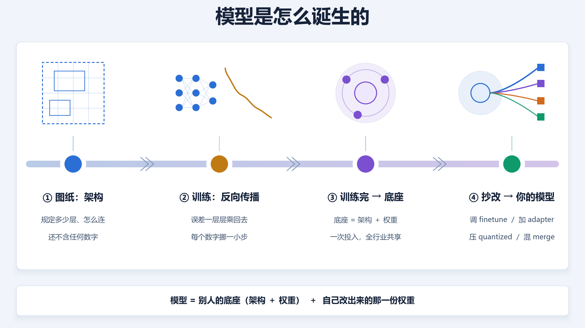
- 继承 一个模型从另一个模型派生
- 变异 同一底座经不同方向调整，长成不同能力
- 消亡 模型下架、不再公开可见
- 竞争 用户注意力有限，下载量是一种度量
- 资源稀缺 能训练基础模型的组织与算力有限
选题与五个研究问题
把「模型生态」从印象式判断，变成可量化、可复核的数据结论——覆盖时间、注意力、结构三个维度。
演化：模型按什么节奏出现？哪类增长最快？
注意力：下载有多集中？尾巴有多长？
谱系：继承关系形成什么结构？谁是主要底座？
关联：哪些属性和下载热度有关？
任务：不同任务的生态结构一样吗？
开源模型数量在短时间内爆发式增长，且大量模型是在别人底座上继续训练出来的；但「谁在被使用、谁在被继承、生态是否健康」缺少统一的量化描述。
对使用者看清注意力分布、避免只看头部；对平台与研究者看清谱系集中度与任务差异；方法上形成一套可复用的「分层 + 精确口径 + 单一结果清单」分析流程。
数据从哪里来，为什么分三层
- Bronze 原始数据，一个字节不改，随时回到源头
- Silver 清洗后可用：统一格式、去重、加溯源列
- Gold 分析结果：能直接出结论、画图的表
- 五个 RQ 全部只在 Gold 层做，不再扫原始数据
- 模型主表 3,138,954 行 × 16 列
- 标签长表 2,062 万 行 × 2 列（一对多展开）
- 血缘边表 919,839 行 × 3 列（底座 / 衍生 / 关系）
- Volume 1.49 GB、314 万行，中等规模
- Variety 数值 + 嵌套结构 + 数组，标签必须拆开
- Velocity 滚动更新快照 + 近 30 天窗口计数
- Veracity 任务缺失 65.55%、血缘缺失 71.74%，显式报告
真正的开销不在数据体积，而在数据之间的关系：92 万对继承关系就是一张 93 万节点、92 万条边的网络，迭代图算法有巨大的固定开销（20 个节点跑一次连通分量就要 46 秒）。
Bronze → Silver → Gold
三层数据流转：源数据 20 个顶层字段（11 采用 + 9 未采用）→ Silver 三表 → Gold 派生字段与结果表。
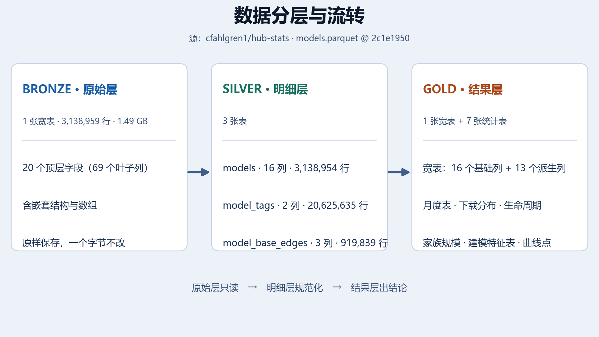
原始数据是半结构化的：字段含嵌套结构（血缘底座）与数组（标签）。直接分析会反复解析、重复扫描；分成三层后，清洗只在 Bronze→Silver 做一次，五个 RQ 全部只读 Gold。
- 缺失值（任务 65.55%、血缘 71.74%）不推断、不填补
- 时区统一锁定 UTC，避免 23 点记录跨月
- 抽样统一用哈希取模，禁用「取前 N 行」
测试环境：单机多核的 Spark
- 操作系统 Windows 11 · JVM OpenJDK 17 · Python 3.11（conda 环境 hf_eco）
- 计算引擎 PySpark 4.2.0，本地六核并行（local[6]），driver 内存 3 GB
- 图计算 GraphFrames（底层 GraphX）· 机器学习 MLlib · 存储列式 parquet
- 全量清洗 142.8 秒（端到端）· 图迭代 6 步合计约 22 分钟
全部在单机多核完成，结论不构成集群范围；无法清空系统文件缓存，除首次读取外均为缓存热态计时。
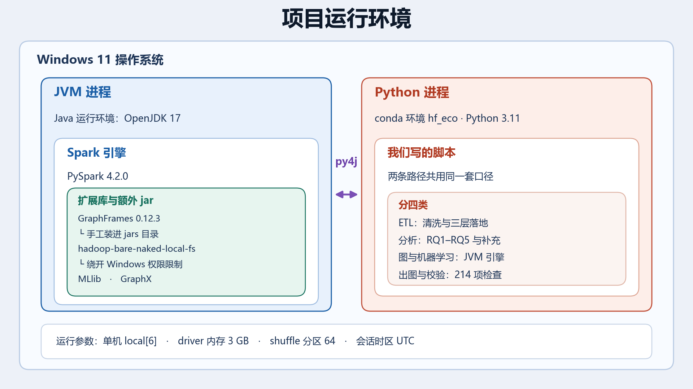
性能实验：规模 · 分区 · 算子
- 耗时随规模单调增长（哈希阈值嵌套子集 10% ⊂ 25% ⊂ 50% ⊂ 100%）
- 分区数存在最优点，不是越多越好（16 / 32 / 64）
- shuffle 类算子开销最大——「大数据处理」最直接的证据
321 次计时执行 · 107 个测量组合，用来验证这套流程换更大数据量时的开销走向。

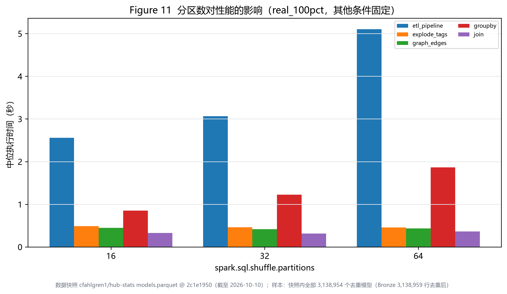
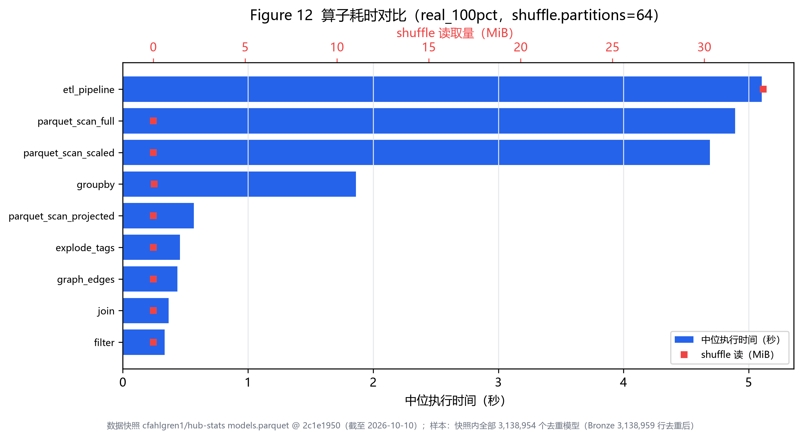
数据集：来源与字段
Hugging Face 公开数据集 hub-stats 固定版本快照，SHA-256 校验一致。文件 1.49 GB、3,138,959 行；去重后 3,138,954 个模型；跨度 2022-03 至 2026-10，共 56 个月。
- 源数据 20 个顶层字段 → 按契约取 11 列
- 标签长表 2,062 万 行 · 血缘边表 919,839 条
- 分层 Bronze → Silver → Gold
- 月度表 ×3：任务 / 库 / 标签的当月新增模型数
- download_distribution · model_family_stats · model_lifecycle · model_adoption_features
- models_enriched 宽表：主表 + 全部派生字段，唯一入口
都在 Spark 生态内：Spark SQL 清洗统计、GraphX 图算法、MLlib 机器学习，列式文件落地。
数据集：陷阱与缺失口径
- 行组 0 是趋势榜单样本 → 禁用「取前 N 行」，统一哈希取模抽样
- 时间为带时区标记的 UTC 字符串 → 必须锁定时区，否则 23 点记录跨月
任务标签缺失 65.55%、血缘缺失 71.74%：一律不推断、不填补，显式报告并写进每条结论的成立条件。
- 按任务统计时，65.55% 的 unknown 恒不参与比较，只单独报告
- 血缘缺失意味着谱系分析只在已声明部分成立
- 每个引用数字都必须带阈值与限定条件（如「50 个可比」需样本 ≥ 200）
数据质量问题的处理原则：不推断、不填补，显式计数，写清成立条件——这也是整份报告「可复核」的底线。
五个研究问题
演化：模型是怎么涌现的
问题：快照里仍可见的模型，按什么节奏出现？哪几类增长最明显？
数据：Gold 层三张月度统计表（任务 / 库 / 标签）+ 宽表（创建月份）。
方法：按月分组计数；标签数组先展开成长表、只保留前 15；首月做「单日占比 + 日内时间戳数」双重检验。
- 时区不统一会让 23 点记录跨月 → 锁定 UTC
- 快照截止 10-10，2026-10 是不完整月 → 单独标注，不与其他月比
- 首月数据异常偏大 → 只报告现象，不推断原因
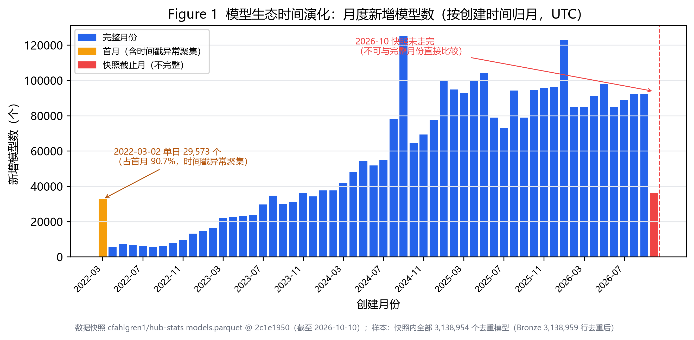
演化：结论与发现
- 峰值 2024-09 新增 125,030；2022 年 10 万 → 2025 年 110 万（近 11 倍）
- 机器人 14 → 35,032；图文多模态 1,807 → 35,802；文生图 62,312
- 库：lerobot 0 → 29,050；transformers 份额 42% → 25.4%（多库分工）
- 任务标签缺失份额 49.6% → 69.0%（近年按任务结论更不可靠）

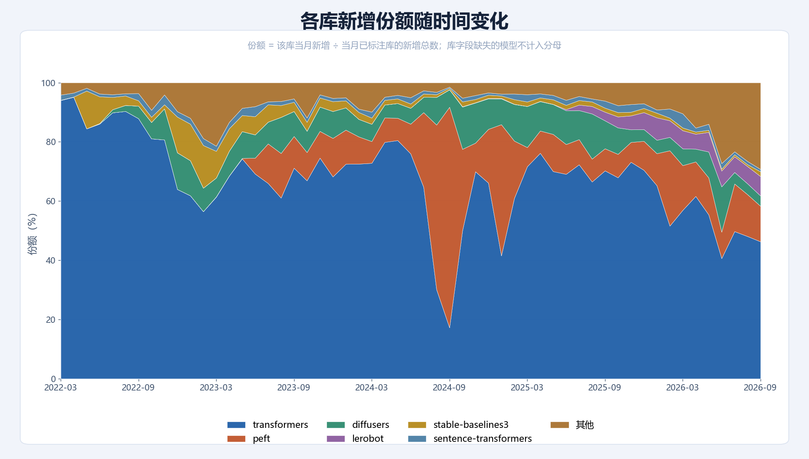
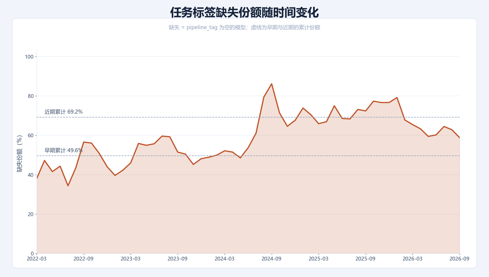
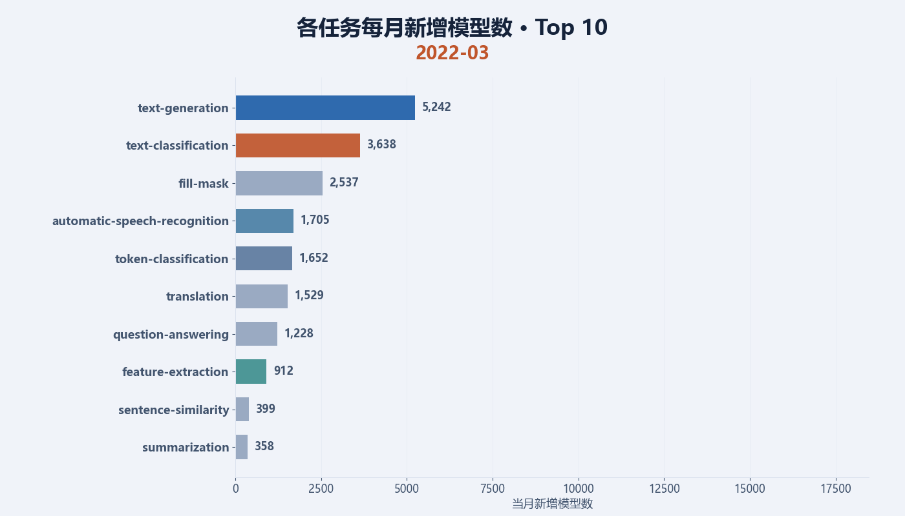
注意力：如何度量集中度
问题：下载注意力有多集中？尾巴有多长、代表什么？
数据：Gold 层两列下载量（近 30 天 / 历史累计）→ Lorenz 点 + 集中度指标。
方法：先归类成频数表（14,894 种取值）再排序，名次用「档起始名次 + 组内序号」还原；三种独立公式互验（偏差 1e-16 量级）。
- 314 万行全局排序被压到单分区串行 → 先聚合成小表再排序，与旧实现对拍等价
- 两种下载口径合计相差 27 倍 → 分列报告，可混用、不可相加
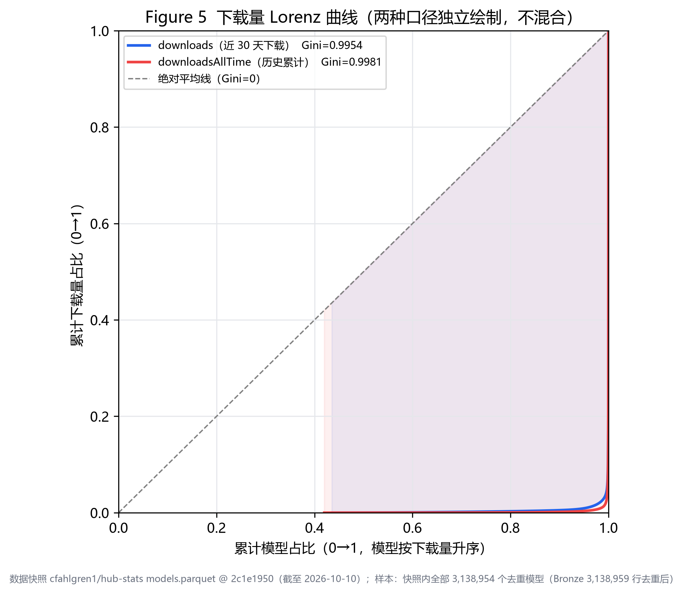
注意力：集中与长尾
- 近 30 天 Gini 0.995355，前 1% 拿走 97.13%，零下载 43.54%；累计口径 0.998117、前 1% 98.70%
- 剔零后仍 0.991773；前 1% 内部 0.936576（集中分层存在）
- 零下载中 97.19% 创建超 30 天（非新模型窗口问题）
- 泰尔组内占比 86%–100%；下载第二的句子嵌入模型与被继承最多的底座不是同一批
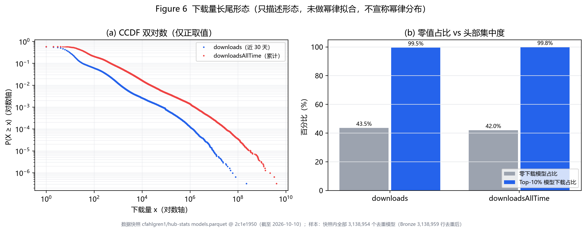
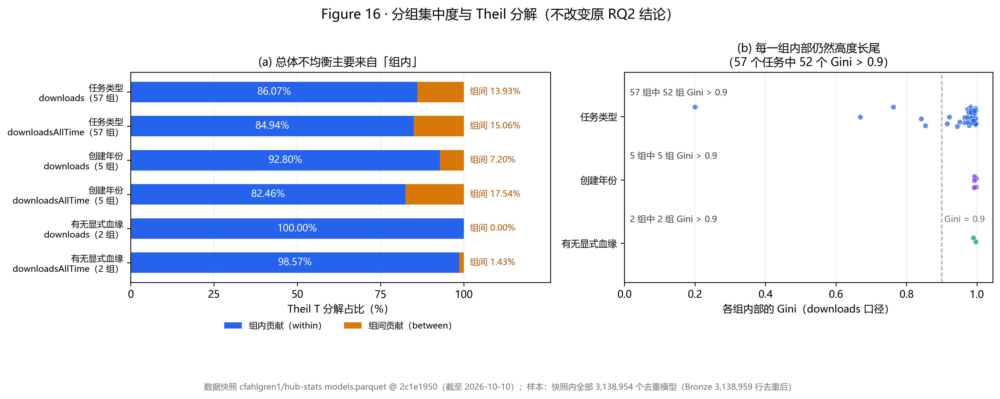
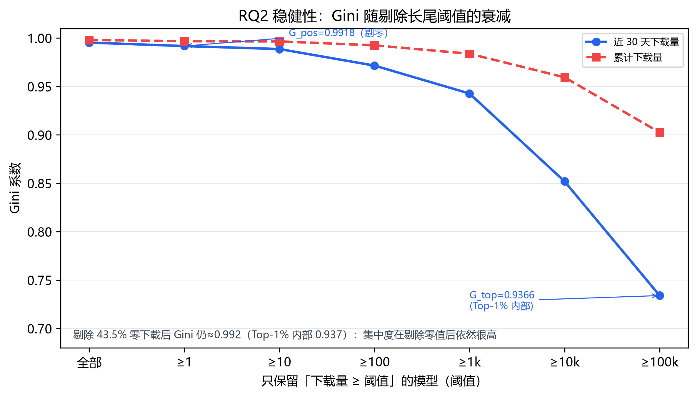
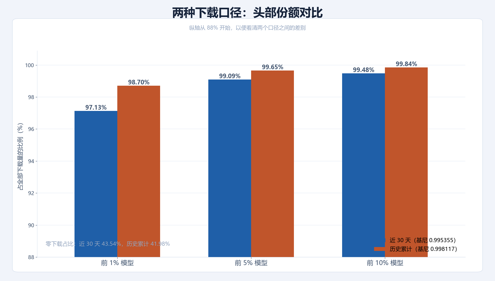
谱系：如何刻画继承网络
问题：继承关系形成什么结构？谁是主要底座？家族长什么样？
数据：Silver 血缘边表（底座 / 衍生 / 关系类型）+ Gold 下载热度 + GraphFrames 迭代结果。
方法：嵌套结构抽取展开成多行；节点取并集去重；双轨制（Spark 原生精确 + GraphFrames 迭代）；含环图先折叠环再求最长链。
- 底座编号藏在嵌套数组 → 抽取后展开
- 节点数相加会重复（975,365 vs 去重 931,066）→ 取并集
- 自环 2,060、外部底座边 14,838 → 全部保留、显式计数
- 93 万节点迭代可能跑不完 → 双轨制 + 2400 秒看门狗 + 断点续跑
- 有环图上「最长链」无定义 → 先折叠环再求最长路径
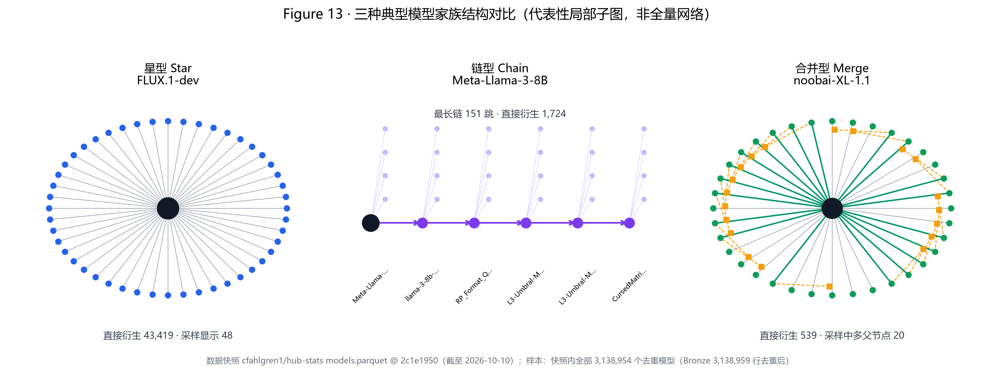
谱系：结论与家族案例
- 成规模家族：星型 647 · 链型 169 · 合并型 43 · 混合型 1（星型为主）
- 最长衍生链 151 跳；「被大量下载」和「被大量继承」基本是两拨模型
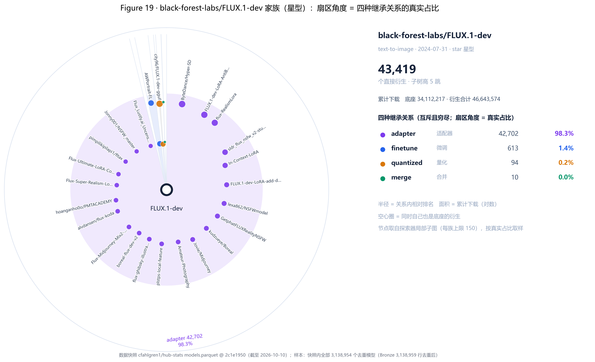
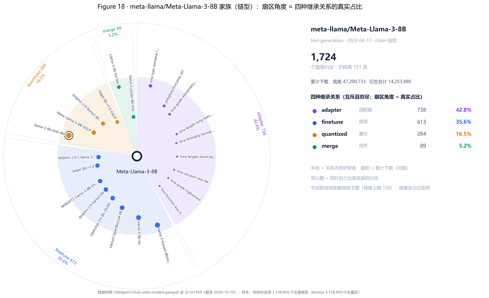
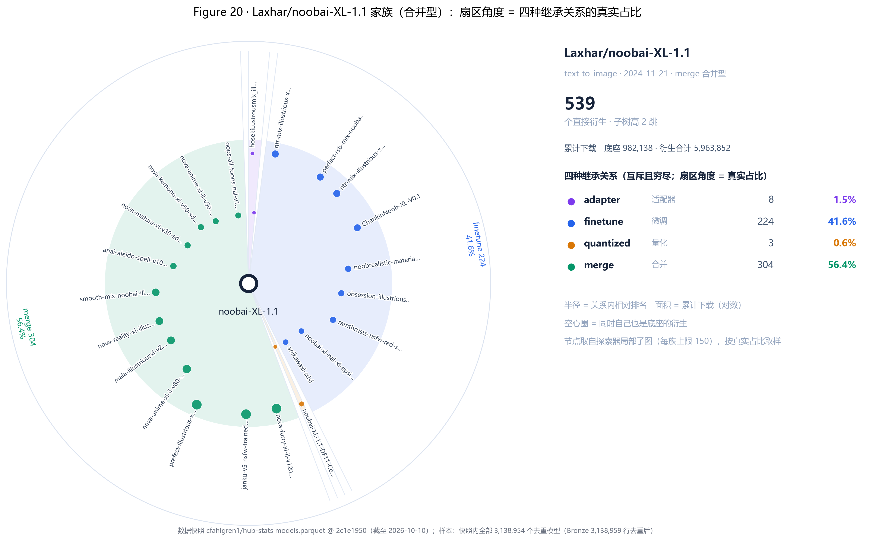
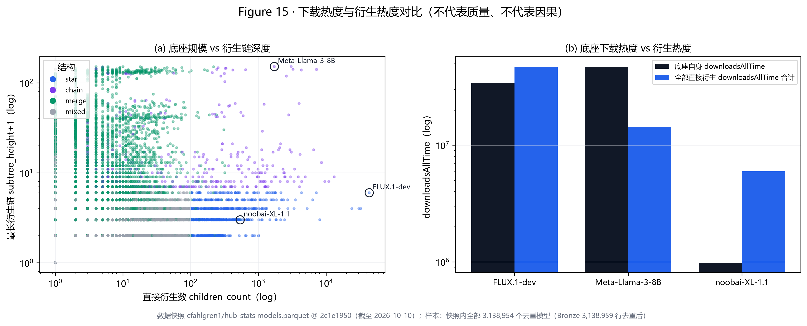
关联：如何建模热度
问题：给你模型的 7 个属性，能猜出它被下载了多少吗？
数据：Gold 特征宽表，7 个属性（点赞、创建天数、标签数量、被继承次数、维护跨度、任务、库）+ 目标（近 30 天下载量取对数）。
方法：确定性哈希抽 20%（626,269 行）；先划分后拟合（训练 501,049 / 测试 125,220，交集 0）；对比基线 / 线性回归 / 随机森林 / 梯度提升树。
- 全量训练太贵 → 20% 哈希抽样（禁用「取前 N 行」）
- 训练集自评指标虚高 → 先划分，预处理只在训练集做，指标只在测试集算
- 类别词表泄漏 → 词表只在训练集统计，保留前 50
- 独热后维度不能猜 → 从框架元信息逐维读取；CSV 输出是目录 → 逐分片合并读取
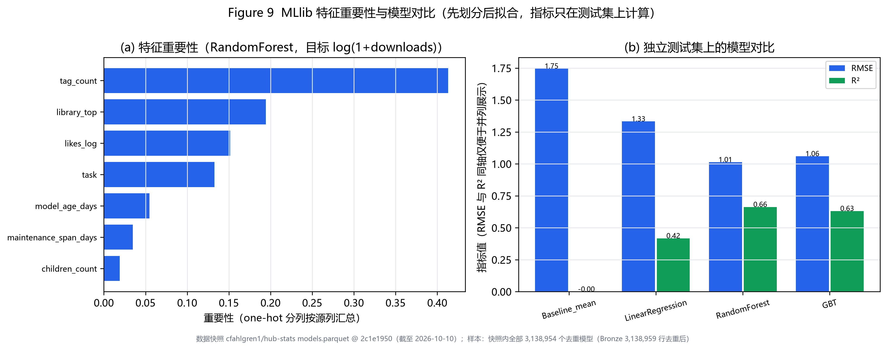
关联：结论与发现
- 基线 R²=0 · 线性回归 0.4177 · 梯度提升树 0.6313 · 随机森林 0.6631（RMSE 1.0139）
- 时间切分后 R² 从 0.6779 降到 0.5034（降约 1/4）→ 只能算同期关联，不能当预测
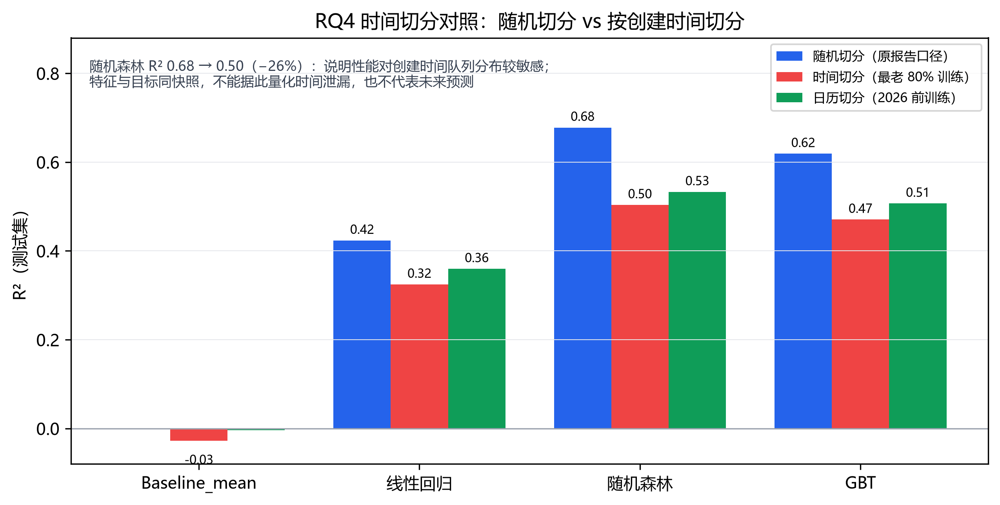
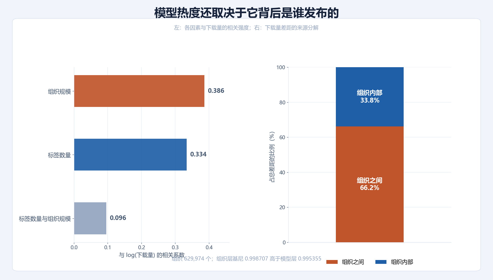
任务：如何比较不同任务
问题：不同任务类型的模型，生态结构是否不一样？
数据：Gold 宽表（任务、下载、年龄）+ Silver 边表（算血缘声明覆盖率）。
方法：按任务分组做描述统计；可比性双门槛（样本量 ≥ 200 且不同取值 ≥ 20）；Gini 与分位数在频数表上精确计算，不用近似函数。
- 任务标签缺失 65.55% → 统一记为 unknown，单独报告、恒不参与比较
- 小样本组 Gini 无意义 → 双门槛 + 显式标注「不可比」
- 近似分位数随并行度变化、不可复现 → 改用精确线性插值
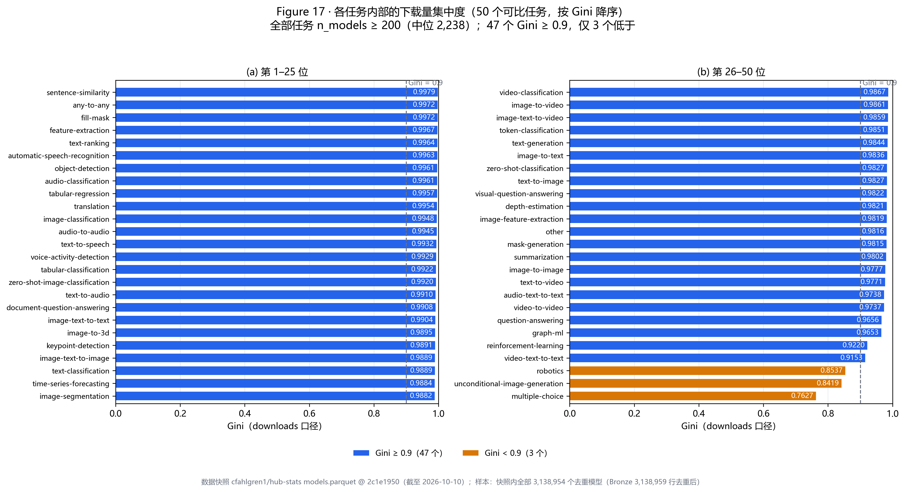
任务：结论与发现
- 已标注任务 56 个，可比 50 个；文本生成 422,224 个最多
- 每个任务内部都极端长尾（可比任务 Gini 中位数 0.9874）
- 数量 ≠ 热度：下载第二是句子相似度（4.39 亿），数量远少于文本生成
- 血缘声明覆盖率差异大：文本排序 84.3%、图像生成 71.3%
- 引用「50 个可比」必须带阈值（换阈值在 27–54 之间变化）

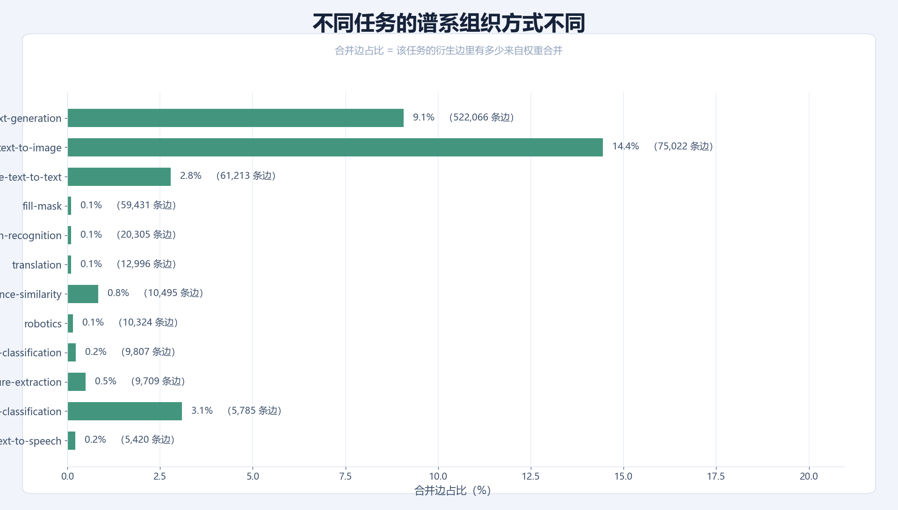
稳健性 · 总结 · 展望
稳健性：九根轴换口径重算
把主要结论换不同口径和边界条件重算，判定分三种：稳健 / 稳健但计数需带条件 / 弱稳健。
- 两根「阈值类」轴定性结论稳定，但计数会变 → 引用数字必须同时写出阈值（如「50 个可比」需样本 ≥ 200、取值 ≥ 20）
- 创建年份是弱稳健：方向一致但排序随口径改变，只能作迹象表述
- 外部底座边 · 自环边 · RQ4 抽样比例与随机种子
- 需重新计算血缘边表与特征表，本轮环境没有条件
- 稳健：换口径后结论方向与量级不变
- 稳健但计数需带条件：结论稳、数字随阈值变 → 必须带阈值引用
- 弱稳健：方向一致但排序会变 → 只作迹象表述
总体结论与四点新意
- 这是一个「大规模长尾 + 极少数超级底座」的生态，注意力集中度极高
- 集中主要来自每一组内部，不是组与组之间拉开的差距
- 成规模家族以星型浅层复用为主，链型次之
- 与热度关联最强的属性是标签数量和所属库，而不是被继承次数
- 所有相关性都只是同一份快照内的统计描述
- 「必须先全局排序」改成先归类再计算 + 对拍等价验证
- 含环图先折叠环再求最长链
- 图算法双轨制，跑不完就如实记录
- 全项目只有一个结果清单，杜绝数字对不上
创新点 · 收获
挑战 · 投入
挑战主要不在算法，而在口径。
Windows 缺 winutils.exe → 换纯 Java 本地文件系统；时区不固定 → 记录跨月。
缺失 65.55% / 71.74% 不推断；首月 90.7% 挤同一天；28,097 条修改早于创建。
全局排序单分区串行；早期十次全量扫描；底座热点倾斜；图算法单步数百秒。
训练集自评指标虚高；取前 N 行会取到热门榜单（样本带偏）。
- 44 个脚本 · 214 项自动检查 · 107 个测量组合 · 321 次计时执行
- 全量清洗 142.8 秒 · 图迭代 6 步约 22 分钟
未来打算
启用已提取未使用的作者/组织字段：检验「标签数量最强」是否只是组织规模的替代表达。
补完剩余三根轴：外部底座边、自环边、RQ4 抽样比例与随机种子。
把源数据里描述模型架构的 config 字段纳入契约，做架构家族（Qwen 系 vs Llama 系）的衍生活跃度对比。
拿到第二个时间点快照，把 RQ4 从「同期关联」推进到「跨期预测」——这也是数据本身最大的边界。
交付包完整性校验 · 数据质量标记列 · 统一图表登记与命令行入口。
「大规模长尾 + 极少数超级底座」——注意力高度集中、家族以星型浅层复用为主。